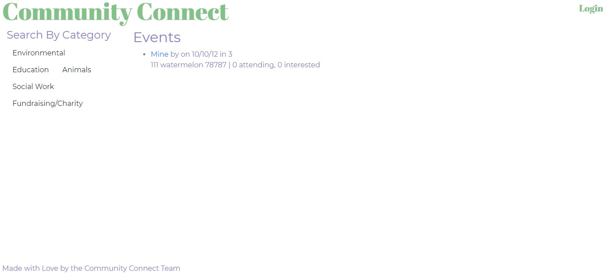

This was are Third Team Project! we decided to recreate a an existing website with modern technology(Mern, React, etc.). The company rents out cameras, lenses, and other equipment. the original website can be found here https://www.austinmoviegear.com/.
Tools/Languages: Javascript, MongoDB, JSX, Node.js, React, Express.js, GraphQL, CSS

In this startup project, We were guided to create a website using the most common techniques ussing HTML and CSS. many of these techniques were used to create this website!
Tools/Languages: HTML, CSS

in this project we were given code and had to reveiw and simplfy the code to it easyier to further decelop in the future. We also had to improve Search engine result and make it easyier for screen readers for the visually impaired.
Tools/Languages: HTML, CSS
In this project we had to create a work day scheduler with a third-party api
Tools/Languages: HTML, CSS, javascript

For this project I created a weather page with a web api
Tools/Languages: HTML, CSS, javascript
in this project I had to create a webpage that stores notes
Tools/Languages: HTML, CSS, javascript, node.js, express.js
on this project we used javascript to create a javascript quiz
Tools/Languages: HTML, CSS, javascript
in this project I used SQL to Employee data for a bussiness
Tools/Languages: HTML, CSS, javascript, node.js, express.js, SQL

This was are first Team Project! We decided to make an apartment finder to find apartments in a set area by your work!
Tools/Languages: JavaScript, jQuery, CSS, CSS framework (Materialize), HTML, Web APIs (DOM), Fetch API

This was are second Team Project! We decided to make an app to help people find charity eventsfor vonteers.
Tools/Languages: Javascript, Handlebars.js, Express.js, CSS \ Bootstrap, HTML, Leaflet.js, Node.js, SQL, Sequelize